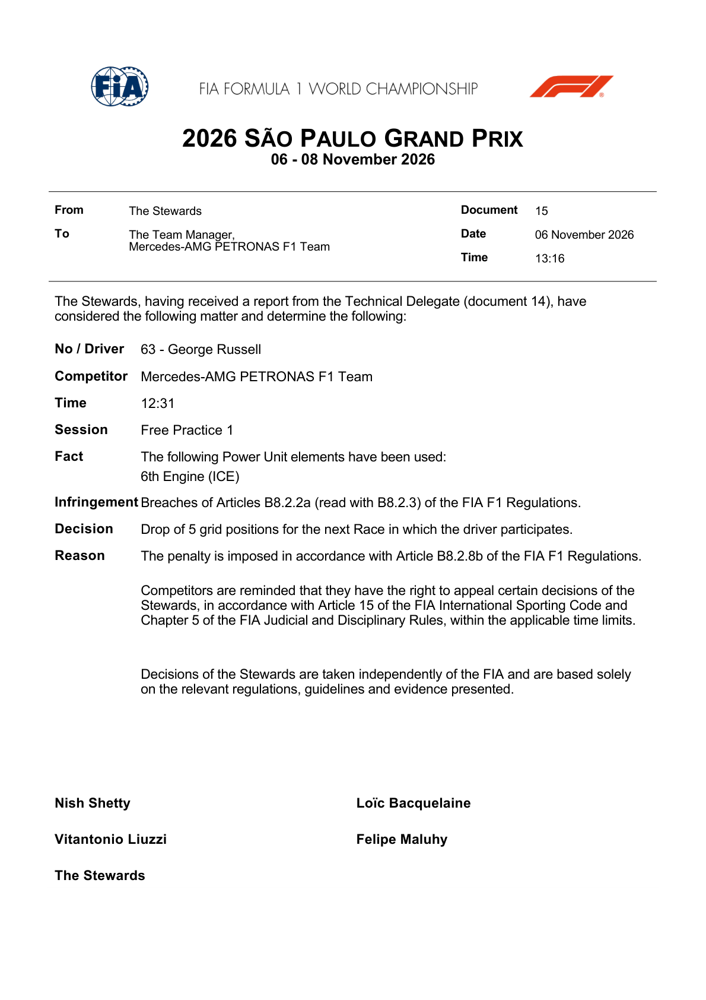
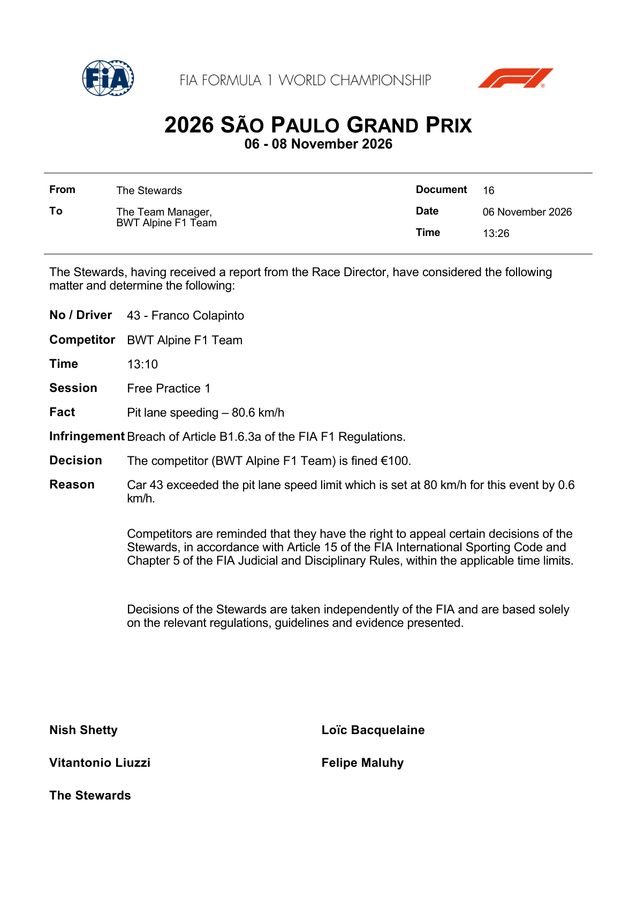
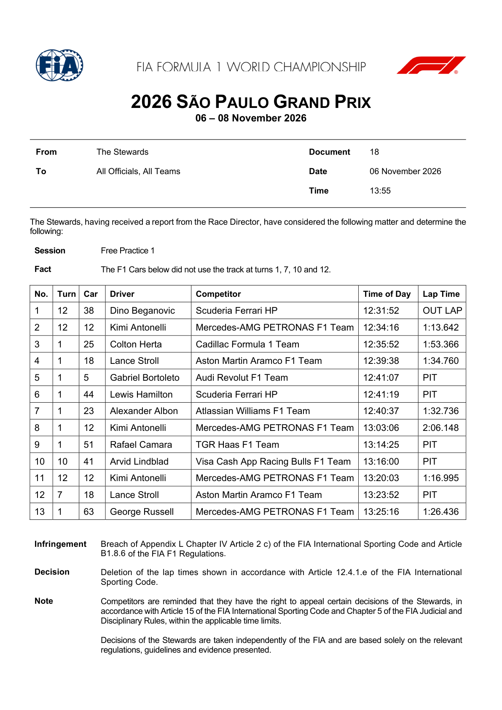
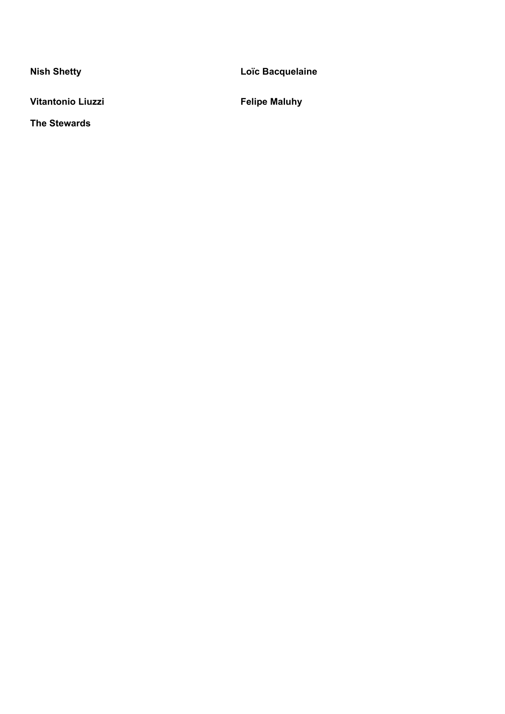
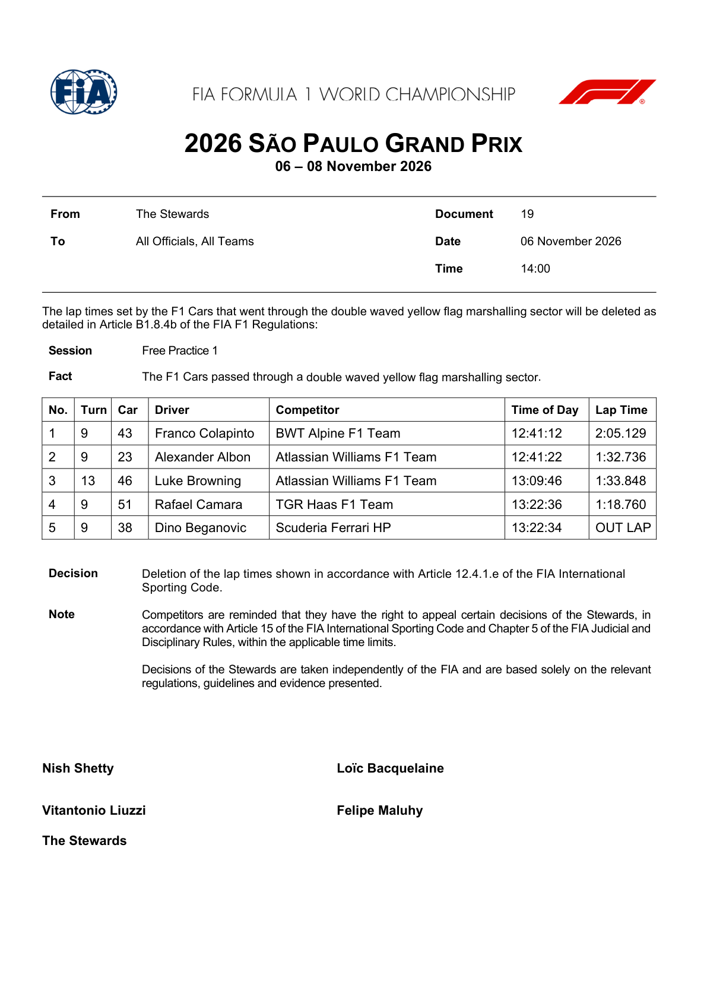
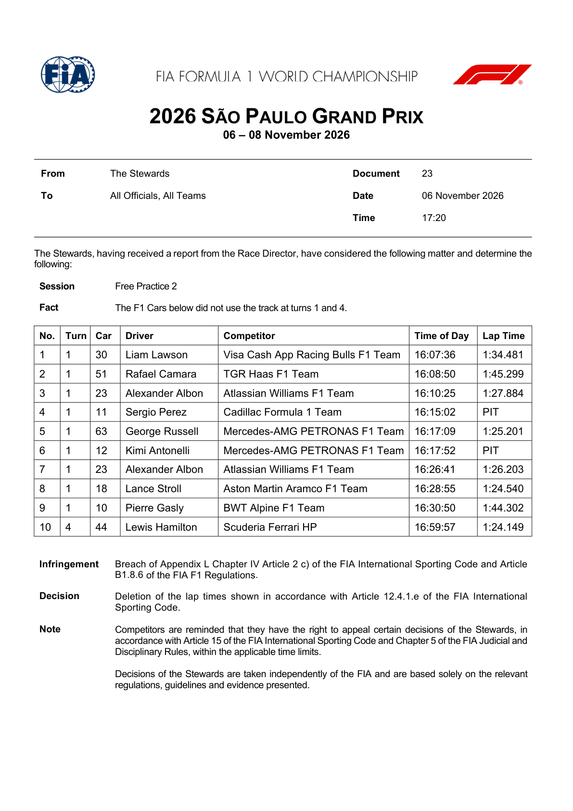
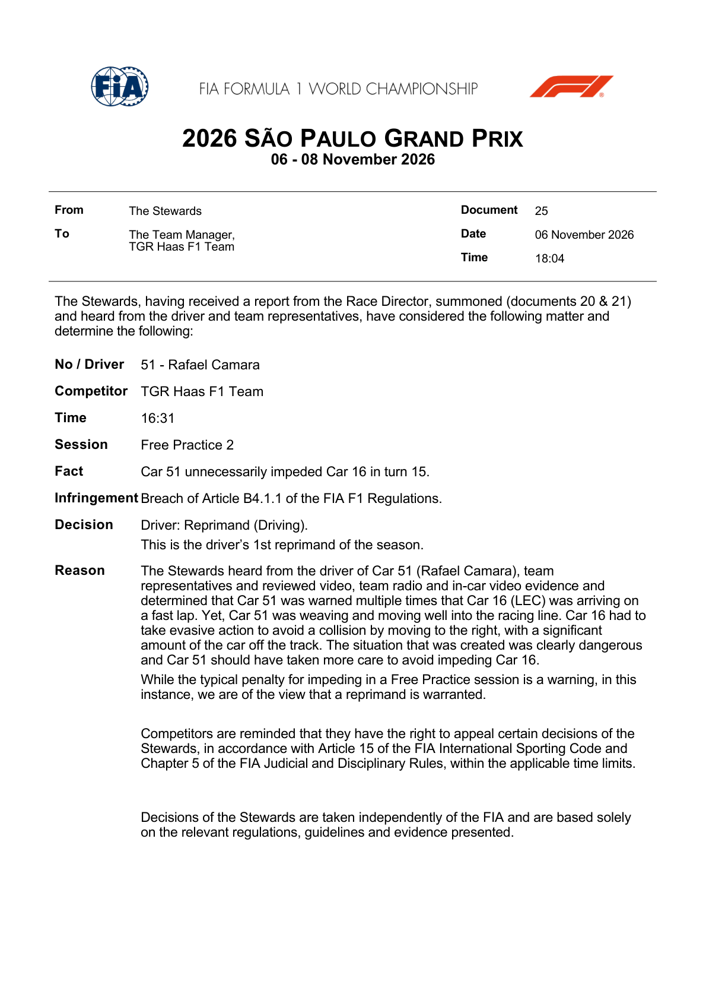
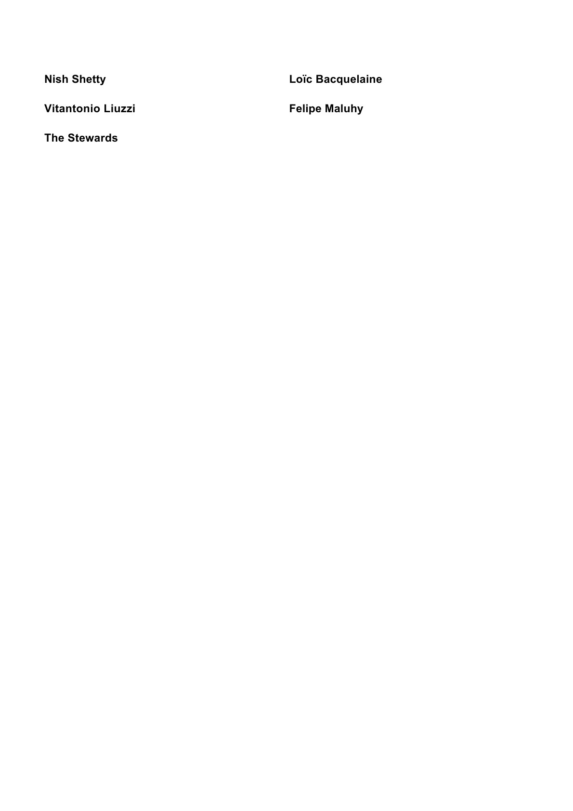
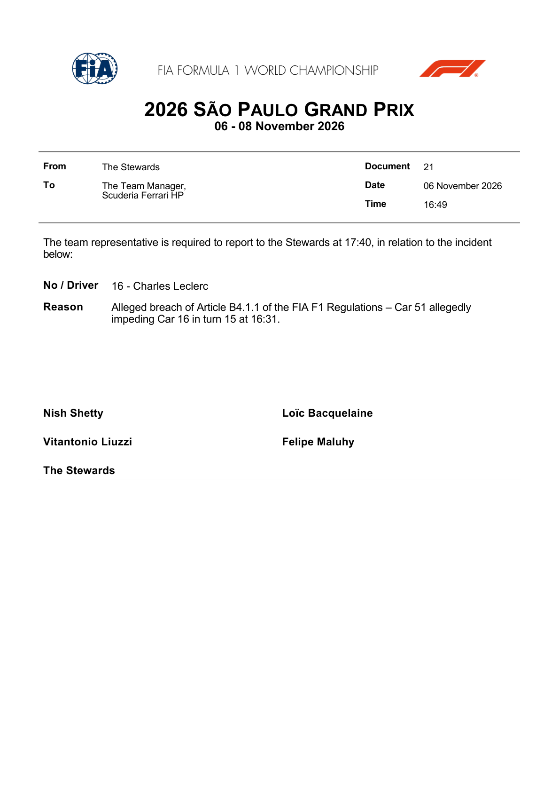
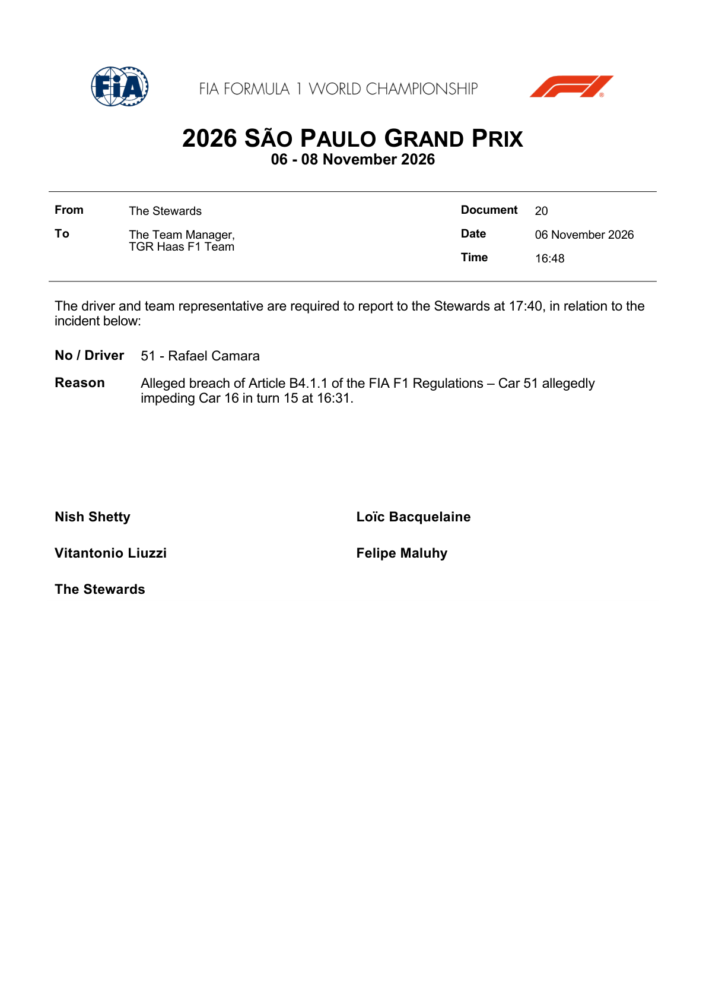

Penalties & Stewards
Every stewards' decision, infringement, fine and penalty from the FIA event documents.
FIA official stewards' decisions and summons
Official source; curated transcription may await review. Linked PDFs are the authority. Discovery does not extract or verify numeric values, and does not replace the curated material below.
Last successful FIA document discovery: 2026-11-07T13:39:18.146134+00:00. This is retrieval time, not issue time; newer revisions may exist.
- 2026_sao_paulo_grand_prix_-_infringement_-_car_51_-_unnecessarily_impeding_of_car_16.pdf (official PDF)
- 2026_sao_paulo_grand_prix_-_infringement_-_free_practice_2_deleted_lap_times.pdf (official PDF)
- 2026_sao_paulo_grand_prix_-_summons_-_car_16_-_alleged_impeding_by_car_51.pdf (official PDF)
- 2026_sao_paulo_grand_prix_-_summons_-_car_51_-_alleged_impeding_of_car_16.pdf (official PDF)
- 2026_sao_paulo_grand_prix_-_infringement_-_free_practice_1_deleted_lap_times_-_double_yellow.pdf (official PDF)
- 2026_sao_paulo_grand_prix_-_infringement_-_free_practice_1_deleted_lap_times.pdf (official PDF)
- 2026_sao_paulo_grand_prix_-_infringement_-_car_43_-_pit_lane_speeding.pdf (official PDF)
- 2026_sao_paulo_grand_prix_-_infringement_-_car_63_-_changes_to_pu_element.pdf (official PDF)
Summons request a hearing; they are not findings or penalties.
| Doc | Driver | Session | Matter | Ruling |
|---|---|---|---|---|
| Doc 15 | George Russell #63 Mercedes-AMG PETRONAS F1 Team | Free Practice 1 | The following Power Unit elements have been used: | Penalty Drop of 5 grid positions for the next Race in which the driver participates.View FIA decision — 1 pageOriginal FIA PDF. Retrieved 2026-11-07T13:39:21+00:00 (not the issue date).  |
| Doc 16 | Franco Colapinto #43 BWT Alpine F1 Team | Free Practice 1 | Pit lane speeding – 80.6 km/h | Fine The competitor (BWT Alpine F1 Team) is fined €100.View FIA decision — 1 pageOriginal FIA PDF. Retrieved 2026-11-07T13:39:21+00:00 (not the issue date).  |
| Doc 18 | Dino Beganovic; Kimi Antonelli; Colton Herta; Lance Stroll; Gabriel Bortoleto; Lewis Hamilton; Alexander Albon; Rafael Camara; Arvid Lindblad; George Russell | Free Practice 1 | The F1 Cars below did not use the track at turns 1, 7, 10 and 12. | Note Deletion of the lap times shown in accordance with Article 12.4.1.e of the FIA InternationalView FIA decision — 2 pagesOriginal FIA PDF. Retrieved 2026-11-07T13:39:21+00:00 (not the issue date).   |
| Doc 19 | Franco Colapinto; Alexander Albon; Luke Browning; Rafael Camara; Dino Beganovic | Free Practice 1 | The F1 Cars passed through a double waved yellow flag marshalling sector. | Note Deletion of the lap times shown in accordance with Article 12.4.1.e of the FIA InternationalView FIA decision — 1 pageOriginal FIA PDF. Retrieved 2026-11-07T13:39:21+00:00 (not the issue date).  |
| Doc 23 | Liam Lawson; Rafael Camara; Alexander Albon; Sergio Perez; George Russell; Kimi Antonelli; Lance Stroll; Pierre Gasly; Lewis Hamilton | Free Practice 2 | The F1 Cars below did not use the track at turns 1 and 4. | Note Deletion of the lap times shown in accordance with Article 12.4.1.e of the FIA International Sporting Code.View FIA decision — 2 pagesOriginal FIA PDF. Retrieved 2026-11-07T13:39:21+00:00 (not the issue date).   |
| Doc 25 | Rafael Camara #51 TGR Haas F1 Team | Free Practice 2 | Car 51 unnecessarily impeded Car 16 in turn 15. | Reprimand Driver: Reprimand (Driving). This is the driver’s 1st reprimand of the season.View FIA decision — 2 pagesOriginal FIA PDF. Retrieved 2026-11-07T13:39:21+00:00 (not the issue date).   |
Source: FIA — São Paulo Grand Prix documents (stewards' decisions).
Official FIA document screenshots
Automatically rendered from the official PDFs. These figures do not update or verify the curated numeric transcriptions above. Unchanged pages already illustrated above are not repeated here.
2026_sao_paulo_grand_prix_-_summons_-_car_16_-_alleged_impeding_by_car_51.pdf
PDF retrieved 2026-11-07T13:39:21+00:00; this is not its issue date.

2026_sao_paulo_grand_prix_-_summons_-_car_51_-_alleged_impeding_of_car_16.pdf
PDF retrieved 2026-11-07T13:39:21+00:00; this is not its issue date.
